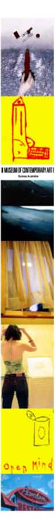

| |
ONLINE GALLERY: ART OF GOLD
| |
Sydney's MCA is curating an online gallery here at noise entitled Visual Frequencies - a selection from a diverse range of over 1,000 entries.
| |
Apart from sitting on the most sterling part of real estate in the country, the spacious and serene Museum of Contemporary Art (MCA) in Circular Quay is also one of the best galleries around.
In true noise style (we partner with only the best organisations of course), we approached the MCA to curate an online exhibition that asked under-25ers to submit anything from digital and web art, photos and hand illustrations to 3D images and poster art.
From the thousands of entries, the MCA's Katrina Pym selected pieces that "explored the artists' relationship between their personal environment and interests" - a tough selection job indeed for such a strong and diverse field.
"We narrowed them down to a shortlist of about 30 then selected the final ten artists from that," continues Pym. "I quite often referred to the accompanying descriptive text as a starting point, before even looking at the works."
The project had a key objective of making contemporary art and visual culture engaging to a broad spectrum of public audiences through different channels of communication, including the web, resulting in wide varieties of entries.
Sean Killen's humorous and minimalist hand-drawn works explore simple themes of social behaviour and emotion, while Henry Trumble's "Wash series" photographs depict scenes of an almost surreal world of washing machines and clotheslines.
Each finalist has at least two works on display in Visual Frequencies, including three pieces from one of Pym's favourites, Sam Phelps.
"His 'Control' series took us a really long time to download, but then an entire world opened up before our eyes,"she enthuses. "He uses 'quarantine' environments that he's created - there's so much control in both his art and his subject matter - it's really clever."
And keep your uggies and tracky dacks on, because you can see the online gallery and the MCA selection in the comfort of your own chair thanks to the wonders of modern cyberspace.
"Technology has enabled a lot of people access to art, and it's a wonderful thing," Pym adds. "Standing in front of an image and being struck by the impact of its size or texture is another thing altogether, but this is a great way of getting younger and wider audiences involved."
Visit Visual Frequencies
Return to the ONLINE GALLERY Project Homepage
(Psst... we reckon you'll also be interested in the FLASH ANIMATIONS,POSTCARDS and E-WORKS Projects)
|
|
|